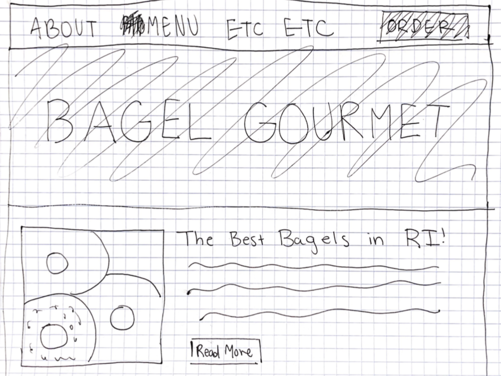
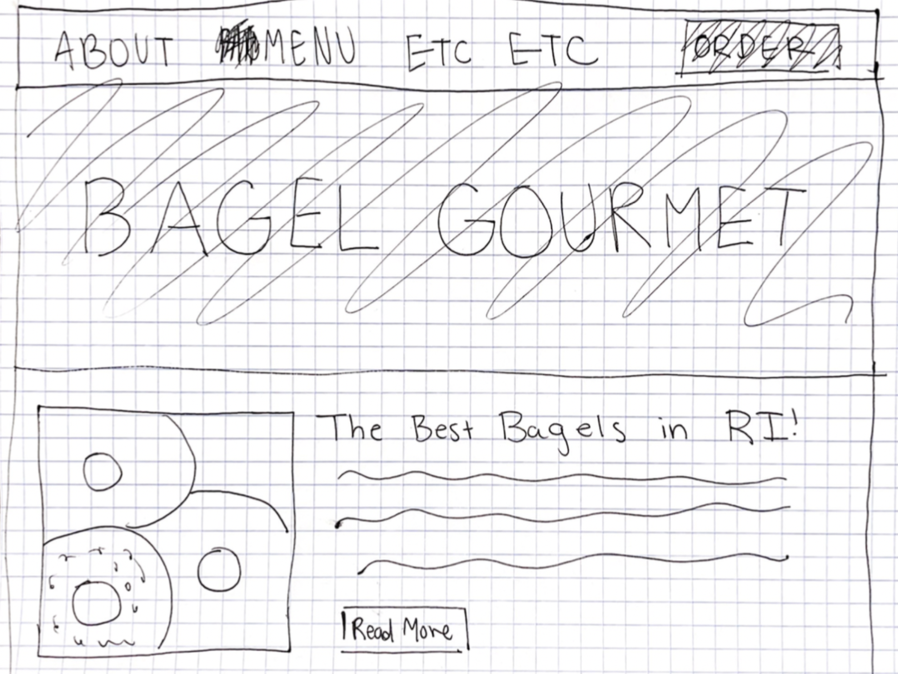
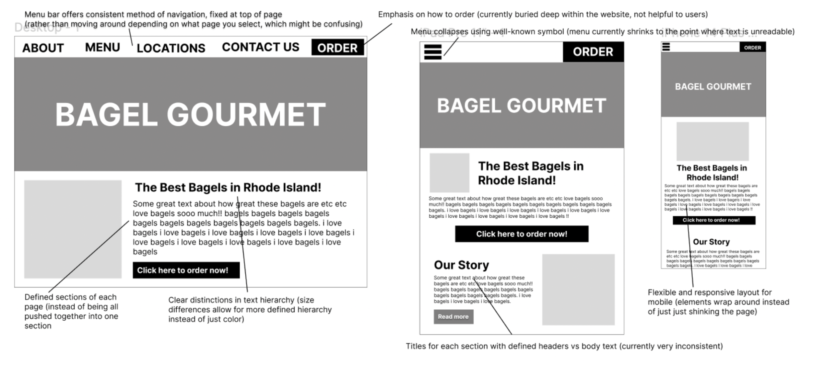

Our main objectives for this project were to analyze and identify
flaws in an existing interface, implement the design process in
creating improved prototypes, and build a responsive website. We were
additionally challenged to create our sites using only HTML and CSS.
The original site has since been taken down. My version can be found
{here}.
Part 1: Identifying Usability Problems

I chose to redesign the website for a local bagel shop – when I first
found it, I was shocked at how antiquated and disorganized it was. I
noticed the following in analyzing its usability:
Additionally, it had extremely poor accessibility. WebAIM WAVE noted
issues in almost every possible category, including a lack of ARIA
labels, problems with color contrast, and a complete absence of
structural elements. I completely agree with its assessment, and began
my work to create a new and improved site.
Part 2: Visual Redesign
With my notes on the existing site complete, it was time to begin the visual redesign process. I began with speed sketching, a series of nine one-minute sketches to generate ideas. Combining elements from various sketches, I integrated these into a final design sketch.
 

With a general idea of my design, I moved over to Figma, where I began with low-fidelity wireframing. I focused on improving the features I had originally noted as lacking in usability.
Using these wireframes as a base, I then created a style guide and a high-fidelity mockup that represented the polished version of what I wanted the site to look like for various screen sizes.


Part 3: Responsive Redesign
Finally, it was time to code my site! This was easily the most complex visual interface I’ve attempted, so there was definitely a learning curve when it came to the more difficult flexbox or aesthetic components. Making the introduction section responsive gave me a lot of trouble – I had four elements (the image, header, text, and button), and I struggled to switch around their placement to replicate my prototypes and ensure usability across all three screen sizes . After much effort, coding, and re-coding, I finally reached a site that I feel confident is much-improved from the original, and offers a far more usable and effective experience for users.

Part 4: Reflection
Overall, this was a valuable learning experience in the practical implementation of the design process.